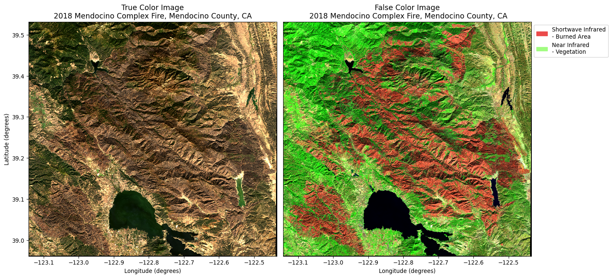
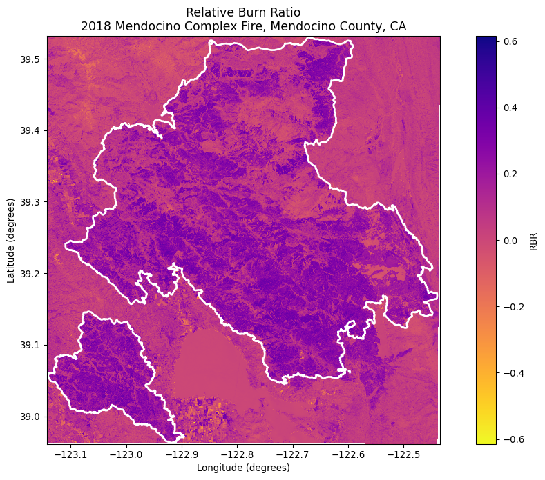
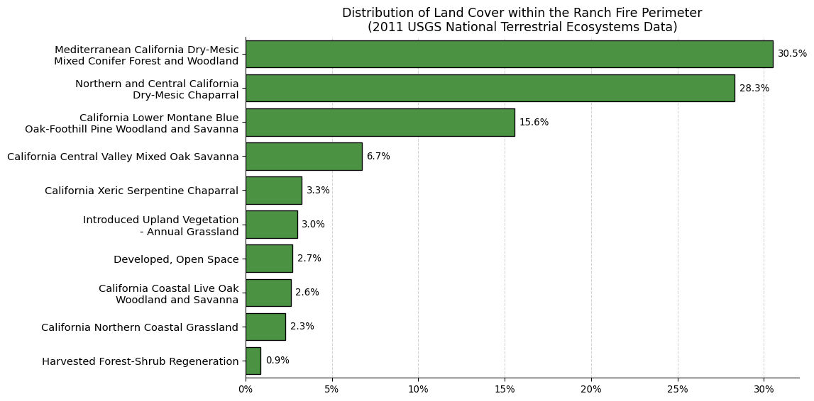
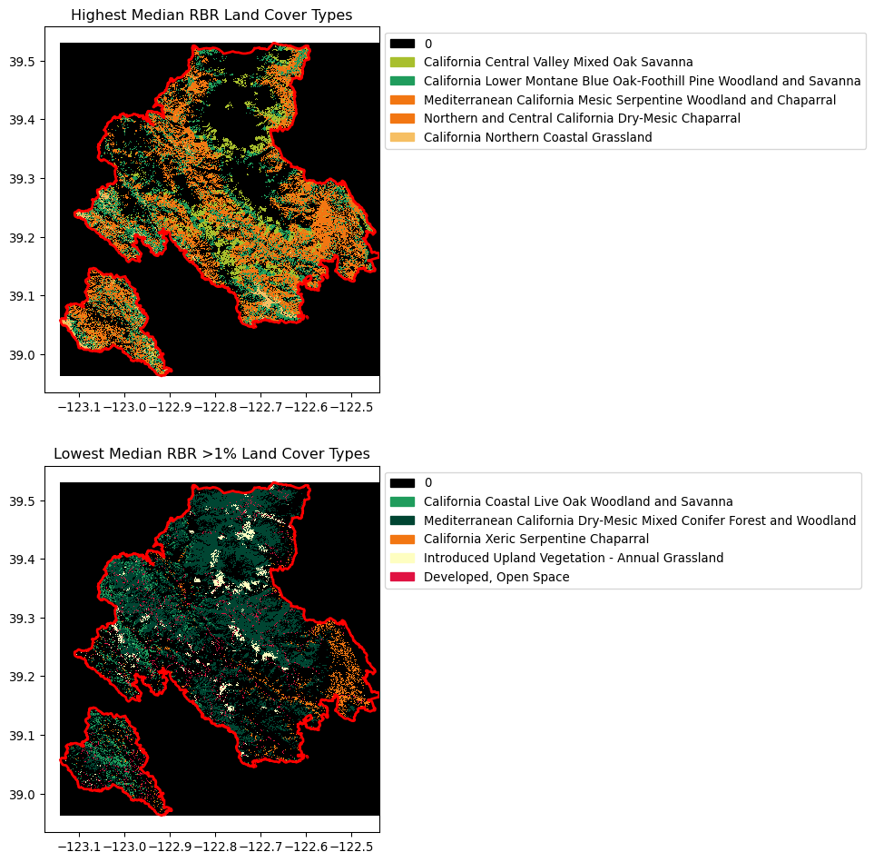

Was a large mega-fire that occurred in Mendocino County, California. The complex was composed of the River Fire and the Ranch Fire, both of which burned 198 km2 (48,920 acres) and 1,660 km2 (410,203 acres) respectively for a total of 1,858 km2 (459,123 acres) burned. At the time, it was the largest fire in California’s recorded history. Fires that exceed 100 km2 are known as megafires because they greatly surpass the severity and size of historical wildfires. As climate change and land use change intensify wildfire risk, megafires are expected to increase in frequency.
This notebook uses a a variety of remotely-sensed data sources to explore the severity and vegetation dynamics of this mega-fire. I chose this region in particular because my first research experience with Dr. Kendall Calhoun and Dr. Justin Brashares was conducted in this region at the Hopland Research and Extension Center. We studied the effects of fire on wildlife recovery, specifically using audio monitors to examine the distribution of bird and bat communities across different levels of fire severity and pyrodiversity. The paper on this work can be found here.
Overview
This code will use the Mendocino Complex Fire as a case study to explore different metrics of fire severity, recovery, and projected risk. Specifically, it uses:
Landsat data to visualize true and false color imagery of the fire scar and the relative burn ratio
Land use and land cover data from the USGS to calculate land cover statistics within the fire perimeter boundaries
Downscaled climate projection data from Cal-Adapt to view wildfire-relevant projected climate variables in California
Data
CalFire Fire Perimeter Data: The Ranch Fire perimeter data comes from CalFire’s data portal. The accessed GeoDatabase includes information on the fire date, managing agency, cause, acres, and the geospatial boundary of the fire, among other information. This data was pre-processed to select only the Ranch fire boundary geometry.
Landsat Data: The Landsat data comes from Microsoft’s Planetary Computer Data Catalog. It is a simplified collection of bands (red, green, blue, near-infrared and shortwave infrared) from the Landsat Collection 2 Level-2 atmospherically corrected surface reflectance data, collected by the Landsat 8 satellite.
Land Use and Land Cover Data: The LULC data comes the Gap Collection provided by the United States Geological Survey accessed via Microsoft’s Planetary Computer Data Catalog. It is a categorical raster with a 30 m x 30 m pixel resolution representing highly thematically detailed land cover map of the U.S.
Import packages
# Import packagesimport osimport numpy as npimport pandas as pdimport matplotlib.pyplot as pltimport matplotlib.ticker as mtickimport matplotlib.patches as mpatches from matplotlib.patches import Patchfrom matplotlib.colors import ListedColormapimport seaborn as snsimport geopandas as gpdimport rioxarray as rioxrfrom shapely import boximport rasteriofrom rasterio.plot import show# MPC import pystac_clientimport planetary_computerimport odc.stacfrom pystac.extensions.eo import EOExtension as eo
Fire Scar Visualization
We’ll start by accessing the MPC data catalog to retrieve the Landsat data. We want to narrow down our region of interest to the bounding box of the Ranch Fire, so we’ll import the fire perimeter data and extract the necessary coordinates for our query.
# Import Ranch Fire perimeterranch_fire = gpd.read_file(os.path.join('data', 'ranch_boundary.geojson'))river_fire = gpd.read_file(os.path.join('data', 'river_boundary.geojson'))# Combine the two fire perimeters into one complex fireunion_geom = ranch_fire.geometry.union(river_fire.geometry)# Create a new geo dataframe of the combined geometrymendocino = gpd.GeoDataFrame(geometry=[union_geom.unary_union], crs=ranch_fire.crs)# Get the bounding box of the entire complex firemendocino_bbox =list(mendocino.to_crs('epsg:4326').total_bounds)# Set time period of interesttime_of_interest ="2018-10-01/2018-11-01"
# Open MPC data catalog connectioncatalog = pystac_client.Client.open("https://planetarycomputer.microsoft.com/api/stac/v1", modifier=planetary_computer.sign_inplace)# Search MPC catalog search = catalog.search(collections=['landsat-c2-l2'], datetime=time_of_interest, bbox=mendocino_bbox, query={# Images with less than 10% cloud cover"eo:cloud_cover": {"lt": 10},# Landsat 8 and 9 were chosen to avoid landsat 7 data collection failure"platform": {"in": ["landsat-8", "landsat-9"]} } )# Retrieve search itemsitems = search.item_collection()print(f"Returned {len(items)} Items")
Returned 4 Items
# Select the item with the minimum cloud coverselected_item =min(items, key=lambda item: eo.ext(item).cloud_cover)# Display item print(f"Choosing {selected_item.id} from {selected_item.datetime.date()}"+f" with {selected_item.properties['eo:cloud_cover']}% cloud cover")
Choosing LC08_L2SP_045033_20181030_02_T1 from 2018-10-30 with 0.02% cloud cover
# Select bands of interest for visualizationbands_of_interest = ["nir08", "red", "green", "blue", "swir16", "swir22"]# Load in the data from the stac itempost_burn_data = odc.stac.stac_load( [selected_item], bands=bands_of_interest, bbox=mendocino_bbox).isel(time=0)# Reproject data to match the CRS between our two datasetsmendocino= mendocino.to_crs("EPSG:4326")post_burn_data = post_burn_data.rio.reproject("EPSG:4326")# Confirm that the CRS of our data matchassert post_burn_data.rio.crs == mendocino.crs
Now that our data input and output is complete, we’ll create a simple map of the true color and false color imagery of the fire scar
Reveal code
fig, axes = plt.subplots(1, 2, figsize=(15, 7))# True color imagepost_burn_data[["red", "green", "blue"]].to_array().plot.imshow(robust=True, ax=axes[0])# Set titles and labelsaxes[0].set_title("True Color Image\n2018 Mendocino Complex Fire, Mendocino County, CA", fontsize=13)axes[0].set_xlabel('Longitude (degrees)')axes[0].set_ylabel('Latitude (degrees)')# False color imagepost_burn_data[['swir22', 'nir08', 'red']].to_array().plot.imshow(ax=axes[1], robust=True)# Create a legend for the bands and boundarylegend_swir = mpatches.Patch(color="#eb4b4b", label='Shortwave Infrared\n- Burned Area')legend_nir = mpatches.Patch(color="#a1fc81", label='Near Infrared\n- Vegetation')# Add legend to false color subplotaxes[1].legend(handles=[legend_swir, legend_nir], bbox_to_anchor=(1.32, 1), fontsize=10)# Set title and labelsaxes[1].set_title('False Color Image\n 2018 Mendocino Complex Fire, Mendocino County, CA', fontsize=13)axes[1].set_xlabel('Longitude (degrees)')axes[1].set_ylabel('')axes[1].set_yticklabels('')axes[1].set_yticks([])plt.tight_layout()plt.show()

Fire Severity: NBR and RBR
While images like the ones above are a great starting point for visualizing fire severity, there are many other ways to understand changing land cover as a result of fire. Two common ones are the normalized burn ratio and the relative burn ratio. The normalized burn ratio uses the spectral reflectance of healthy and burned vegetation to identify areas of high severity fire. Near infrared radiation (\(NIR\)) is highly reflective in healthy vegetation and short wave infrared (\(SWIR\)) is highly reflective in unhealthy or burned vegetation.
\[ NBR = \frac{NIR - SWIR}{NIR + SWIR} \]
The relative burn ratio is an alternate way to visualize fire severity that takes into account the overall variation in vegetation before the fire event. Scaling by pre-fire conditions allows you to compare vegetation loss across different intital vegetation conditions. Here’s how it is described in Parks et al. 2014:“Simply put, RBR is the dNBR divided by a simple adjustment to the pre-fire NBR. Adding 1.001 to the denominator ensures that the denominator will never be zero, thereby preventing the equation from reaching infinity and failing.”
For this visualization, I will be creating a map of \(RBR\) for the Ranch Fire. To do this, will need to get data before the fire event to analyze pre-fire conditions.
# Change our time period of interest to before the firetime_of_interest ="2018-01-01/2018-07-01"# Search MPC catalog search = catalog.search(collections=['landsat-c2-l2'], datetime=time_of_interest, bbox=mendocino_bbox, query={# Images with less than 10% cloud cover"eo:cloud_cover": {"lt": 10},# Landsat 8 and 9 were chosen to avoid landsat 7 data collection failure"platform": {"in": ["landsat-8", "landsat-9"]} } )# Retrieve search itemsitems = search.item_collection()print(f"Returned {len(items)} Items")# Select the item with the minimum cloud coverpre_burn_item =min(items, key=lambda item: eo.ext(item).cloud_cover)print(f"Choosing {pre_burn_item.id} from {pre_burn_item.datetime.date()}"+f" with {pre_burn_item.properties['eo:cloud_cover']}% cloud cover")# Select bands of interest for visualizationbands_of_interest = ["nir08", "red", "green", "blue", "swir16", "swir22"]pre_burn_data = odc.stac.stac_load( [pre_burn_item], bands=bands_of_interest, bbox=mendocino_bbox).isel(time=0)# Confirm CRS matches the post-burn datapre_burn_data = pre_burn_data.rio.reproject("EPSG:4326")assert post_burn_data.rio.crs == pre_burn_data.rio.crs
Returned 12 Items
Choosing LC08_L2SP_045033_20180507_02_T1 from 2018-05-07 with 0.04% cloud cover
# View RBR across the fire scar fig, ax = plt.subplots(figsize=(14, 8))rbr.plot.imshow(ax=ax, cmap="plasma_r", cbar_kwargs={'label':'RBR', })# Plot the fire perimetermendocino.boundary.plot(ax=ax, edgecolor='#fff', linewidth=2, label='Mendocino Complex Fire Boundary')ax.set_title("Relative Burn Ratio\n2018 Mendocino Complex Fire, Mendocino County, CA", fontsize=13)ax.set_xlabel('Longitude (degrees)')ax.set_ylabel('Latitude (degrees)')plt.show()

Both the false color imagery and the \(RBR\) imagery provide ways to understand the scope and magnitude of fire across landscapes. But what if you were interested in understanding more detail about the area affected? For this, we’ll turn to data on land cover.
Land Cover Statistics
To understand what biomes and land cover types were affected by the fire, we’ll access a different MPC collection: the USGS Gap Land Cover data. This data contains information on detailed information on land use and land cover (lulc) types that will let us get more information about the Mendocino Complex Fire’s impact. One downside of this dataset is that it is from 2011, so it is fairly outdated. It also means we cannot compare land cover before and after the fire event in the same way as with the Landsat data. The biggest upside of the Gap collection, however, is its level of detail. This dataset contains much more finescale classification of land cover and land use types than some of the more general datasets present in the MPC catalog. So, for this example, we will use the Gap data to make an estimation of what the land cover was like in Mendocino County before the 2018 fire.
# Open MPC data catalogcatalog = pystac_client.Client.open("https://planetarycomputer.microsoft.com/api/stac/v1", modifier=planetary_computer.sign_inplace,)# Search MPC catalog search = catalog.search(collections=['gap'], # Different collection than previous catalog search bbox=mendocino_bbox)# Retrieve search itemsitems = search.item_collection()print(f"Returned {len(items)} Items")
Returned 1 Items
# Select unique search itemitem = items[0] # Access raster data from itemlulc = rioxr.open_rasterio(item.assets['data'].href)# Remove length 1 dimension (band)lulc = lulc.squeeze().drop_vars('band')print("Sizes of dimensions:", dict(lulc.sizes))# Confirm CRS matchlulc = lulc.rio.reproject("EPSG:4326")assert lulc.rio.crs == mendocino.crs# Clip to fire perimeterlulc_clip = (lulc.rio.clip_box(*mendocino.total_bounds) .rio.clip(mendocino.geometry) )
Sizes of dimensions: {'y': 10000, 'x': 10000}
# Get the number of pixels per classvalues, counts = np.unique(lulc_clip, return_counts =True)# Store values and counts in a dataframepix_counts = pd.DataFrame({'code' : values,'pixel_count' : counts,})# Import the class labels datasetlabels = pd.read_csv(os.path.join('data','GAP_National_Terrestrial_Ecosystems.csv') )# Join the pixel count and labels dfspix_label = pd.merge(pix_counts, labels, how="left", on='code')
# Filtering out the 'no-data' classvalid_classes = pix_label[pix_label['code'] !=65535].copy()# Find the total pixels to calculate land cover percentagestotal_pixels = valid_classes['pixel_count'].sum()# Calculate land cover percentagevalid_classes['percentage'] = (valid_classes['pixel_count'] / total_pixels) *100valid_classes = valid_classes[['class_label', 'percentage', 'pixel_count']].sort_values(by='percentage', ascending=False)
Reveal code
# Plot the land cover statisticsplt.figure(figsize=(12, 6))ax = sns.barplot(data=valid_classes.head(10), # Only interested in the top 10 most common classes y='class_label', x='percentage', color='#40A135', edgecolor='black', orient='h' )# Add values on top of the barsfor container in ax.containers: ax.bar_label(container, padding=5, fmt='%.1f%%') # Format x-axis tick labelsax.xaxis.set_major_formatter(mtick.PercentFormatter(xmax=100, decimals=0))# Add x-axis gridlinesax.set_axisbelow(True) # Set below the barsax.xaxis.grid(True, which='major', linestyle='--', color='lightgrey')# Format y-ticksyticks =list(range(10)) # Added to avoid userwarning setting ytick labelsax.set_yticks(yticks)ax.set_yticklabels(['Mediterranean California Dry-Mesic\nMixed Conifer Forest and Woodland','Northern and Central California\nDry-Mesic Chaparral','California Lower Montane Blue\nOak-Foothill Pine Woodland and Savanna','California Central Valley Mixed Oak Savanna','California Xeric Serpentine Chaparral','Introduced Upland Vegetation\n- Annual Grassland','Developed, Open Space','California Coastal Live Oak\nWoodland and Savanna','California Northern Coastal Grassland','Harvested Forest-Shrub Regeneration'])# Remove plot borders for clarityax.spines['top'].set_visible(False)ax.spines['right'].set_visible(False)# Title and labelsax.set_title('Distribution of Land Cover within the Ranch Fire Perimeter\n(2011 USGS National Terrestrial Ecosystems Data)', fontsize=13)ax.set_xlabel('')ax.set_ylabel('')plt.yticks(fontsize=11)plt.tight_layout()plt.show()

Examining Relative Burn Ratio Across Land Cover Types
Now that we’ve looked at both RBR and Land Cover separately, let’s combine these two datasets two understand which vegetation types may be proportionally seeing an increased RBR.
Before combining our data, we’ll start by ensuring our CRS, shape, and resolution match between the two datasets.
# Check the CRS and shapeprint("RBR CRS:", rbr.rio.crs)print("LULC CRS:", lulc_clip.rio.crs)print("RBR shape:", rbr.shape)print("LULC shape:", lulc_clip.shape)# Our shapes don't match, so let's resample the lulc to match the rbrlulc_resampled = lulc_clip.rio.reproject_match(rbr, resampling=rasterio.enums.Resampling.nearest)print("\nAfter resampling:")print("RBR shape:", rbr.shape)print("LULC shape:", lulc_resampled.shape)
# Add a final check to ensure things are good before proceedingassert rbr.rio.crs == lulc_resampled.rio.crsassert rbr.shape == lulc_resampled.shape
# Extract data valuesrbr_values = rbr.valueslulc_values = lulc_resampled.values# Create masks for valid data (non-NaN RBR and non-zero LULC)valid_rbr =~np.isnan(rbr_values) # ~ represents NOTvalid_lulc = lulc_values !=0combined_mask = valid_rbr & valid_lulc# Extract only the pixels within the combined maskrbr_mask = rbr_values[combined_mask]lulc_mask = lulc_values[combined_mask]# Create a combined df of rbr and lulccombined_df = pd.DataFrame({'rbr': rbr_mask,'lulc_code': lulc_mask.astype(int)})# Merge with class labelscombined_analysis = pd.merge(combined_df, labels, left_on='lulc_code', right_on='code', how='left')
# Calculate RBR stats by land cover typerbr_by_landcover = combined_analysis.groupby('class_label')['rbr'].agg(['count', 'mean', 'median', 'std', 'min', 'max'])# Add percentage of total arearbr_by_landcover['percentage'] = (rbr_by_landcover['count'] / rbr_by_landcover['count'].sum() *100).round(2)# Sort by median RBR rbr_by_landcover = rbr_by_landcover.sort_values('median', ascending=False)# Filter for land cover types greater than 1% of fire areasignificant_types = rbr_by_landcover[rbr_by_landcover['percentage'] >1.0]
Now that we’ve combined our \(RBR\) and lulc data, let’s make maps to visualize the land cover types with the highest average \(RBR\) values and land cover types with the lowest average \(RBR\) values.
Extract color map
# Access the colormap associated with the Gap datawith rasterio.open(item.assets["data"].href) as dataset: colormap = dataset.colormap(1)# Extract the colormap keys, these correspond to a land cover classkeys =list(colormap.keys()) keys.sort()# Confirm that every unique color map key was extractedassert keys ==list(range(0, len(keys))) # Convert colors to RGBA format that works with matplotlib color_list = []for key in keys: rgba = colormap[key] # Rasterio colors are 0-255 but matplotlob needs 0-1 normalized_color = [float(v) /float(255) for v in rgba] color_list.append(normalized_color)# Create a discrete colormap from the converted colorscmap_lulc = ListedColormap(color_list)# --------- High severity ----------# Extract the class labels of the 5 most severe and least severe rbr land cover types high_rbr_types = rbr_by_landcover.head(5).index# Filter by those class names to get entire dfrbr_index = rbr_by_landcover.reset_index()high_rbr_df = rbr_index[rbr_index['class_label'].isin(high_rbr_types)]# Join class codes back on so we can pull the associated colormaphigh_rbr_code = pd.merge(high_rbr_df, labels, how='left', on='class_label')# Get unique valueshigh_unique = np.unique(high_rbr_code['code'])# Add the no-data class backhigh_unique = np.insert(high_unique, 0, 0)# Create a subset colormap and class labels for values in clipped datahigh_colors = [cmap_lulc.colors[v] for v in high_unique]high_cmap = ListedColormap(high_colors)high_classes = item.properties["label:classes"][0]["classes"]# Create patches for clipped datahigh_patches = []for i, v inenumerate(high_unique):if v <len(high_classes): high_patches.append(Patch(color=high_colors[i], label=high_classes[v]))else: # Fallback in case a class is outside the chosen subset classes, label as class # high_patches.append(Patch(color=high_colors[i], label=f'Class {v}'))# --------- Low severity ----------# Extract the class labels of the 5 most severe and least severe rbr land cover types low_rbr_types = rbr_by_landcover[rbr_by_landcover['percentage'] >1.0].tail(5).index# Filter by those class names to get entire dflow_rbr_df = rbr_index[rbr_index['class_label'].isin(low_rbr_types)]# Join class codes back on so we can pull the associated colormaplow_rbr_code = pd.merge(low_rbr_df, labels, how='left', on='class_label')# Get unique valueslow_unique = np.unique(low_rbr_code['code'])# Add the no-data class backlow_unique = np.insert(low_unique, 0, 0)# Create a subset colormap and class labels for values in clipped datalow_colors = [cmap_lulc.colors[v] for v in low_unique]low_cmap = ListedColormap(low_colors)# Get class labels from stac metadatalow_classes = item.properties["label:classes"][0]["classes"]# Create patches for clipped datalow_patches = []for i, v inenumerate(low_unique):if v <len(low_classes): low_patches.append(Patch(color=low_colors[i], label=low_classes[v]))else: low_patches.append(Patch(color=low_colors[i], label=f'Class {v}'))
Reveal code
# Initialize figurefig, axes = plt.subplots(2, 1, figsize=(14, 12))# --------- High severity ----------# Map the most severe data value to the subset colormap indices# Need to remap the values here because color maps expect sequential values, not the random numbers of lulc codeshigh_mapped = np.zeros_like(lulc_clip)for i, v inenumerate(high_unique): high_mapped[lulc_clip == v] = i# Convert mapped data to color array for visualizationhigh_data = np.moveaxis(# Apply colormap to the remapped data# Rearrange the dimensions of the array becase rasterio.show() expects a different order high_cmap(high_mapped), [0, 1, 2], [1, 2, 0] # 0: height, 1: width, 2: color_channels)# Plot the data using rasterio.show# returns a matplotlib object that doesn't need to be assigned to something, so assign it to '-'_ = show(high_data, ax=axes[0], transform=lulc_clip.rio.transform(), interpolation="none")# Add the fire boundarymendocino.boundary.plot(ax=axes[0], color='red', linewidth=2)axes[0].legend(handles=high_patches, bbox_to_anchor=(1, 1), loc='upper left')axes[0].set_title(f'Highest Median RBR Land Cover Types')# --------- Low severity ----------# Map the least severe data value to the subset colormap indiceslow_mapped = np.zeros_like(lulc_clip)for i, v inenumerate(low_unique): low_mapped[lulc_clip == v] = i# Convert mapped data to color array for visualizationlow_data = np.moveaxis( low_cmap(low_mapped), [0, 1, 2], [1, 2, 0])# Plot the data using rasterio.show_ = show(low_data, ax=axes[1], transform=lulc_clip.rio.transform(), interpolation="none")# Add the fire boundarymendocino.boundary.plot(ax=axes[1], color='red', linewidth=2)axes[1].legend(handles=low_patches, bbox_to_anchor=(1, 1), loc='upper left')axes[1].set_title(f'Lowest Median RBR >1% Land Cover Types')plt.show()

print(f"High severity land cover types")for idx, row in high_rbr_code.iterrows():print(f"\n{row['class_label']}")print(f"Median RBR: {row['median']:.4f}")print(f"Area affected: {row['percentage']:.2f}%")
High severity land cover types
Northern and Central California Dry-Mesic Chaparral
Median RBR: 0.2364
Area affected: 28.31%
California Central Valley Mixed Oak Savanna
Median RBR: 0.2105
Area affected: 6.73%
California Lower Montane Blue Oak-Foothill Pine Woodland and Savanna
Median RBR: 0.2085
Area affected: 15.54%
Mediterranean California Mesic Serpentine Woodland and Chaparral
Median RBR: 0.2071
Area affected: 0.33%
California Northern Coastal Grassland
Median RBR: 0.2030
Area affected: 2.32%
print(f"Low severity land cover types")for idx, row in low_rbr_code.iterrows():print(f"\n{row['class_label']}")print(f"Median RBR: {row['median']:.4f}")print(f"Area affected: {row['percentage']:.2f}%")
Low severity land cover types
California Xeric Serpentine Chaparral
Median RBR: 0.1791
Area affected: 3.00%
Introduced Upland Vegetation - Annual Grassland
Median RBR: 0.1773
Area affected: 2.73%
Developed, Open Space
Median RBR: 0.1530
Area affected: 2.64%
California Coastal Live Oak Woodland and Savanna
Median RBR: 0.1469
Area affected: 3.26%
Mediterranean California Dry-Mesic Mixed Conifer Forest and Woodland
Median RBR: 0.1211
Area affected: 30.50%
Conclusion
As you can see, land cover type varies across which regions of the fire had more or less severe burn ratios. Various characteristics such as slope, aspect, humidity, and more affect both the vegetative composition of a microsite, but also that particular site’s risk of high or low severity fire. Understanding the parameters associated with fire risk and severity is a delicate balance, one that especially is less well understood in non-forested ecosystems such as oak woodlands.
References
California Department of Forestry and Fire Protection (CAL FIRE), calfire_all.gdb, 2024-11-17, retrieved from CAL FIRE data portal.
Earth Resources Observation and Science (EROS) Center. (2020). Landsat 8-9 Operational Land Imager / Thermal Infrared Sensor Level-2, Collection 2. U.S. Geological Survey. https://doi.org/10.5066/P9OGBGM6
A. Davidson and A. McKerrow, “GAP/LANDFIRE National Terrestrial Ecosystems 2011.” U.S. Geological Survey, 2016. doi: 10.5066/F7ZS2TM0. Available: https://www.sciencebase.gov/catalog/item/573cc51be4b0dae0d5e4b0c5. [Accessed: Nov. 26, 2024]
Citation
BibTeX citation:
@online{oyler2025,
author = {Oyler, Haylee},
title = {The {Era} of {Mega-Fires}},
date = {2025-07-25},
url = {https://haylee360.github.io/posts/2025-07-25-mendocino/},
langid = {en}
}
![]()